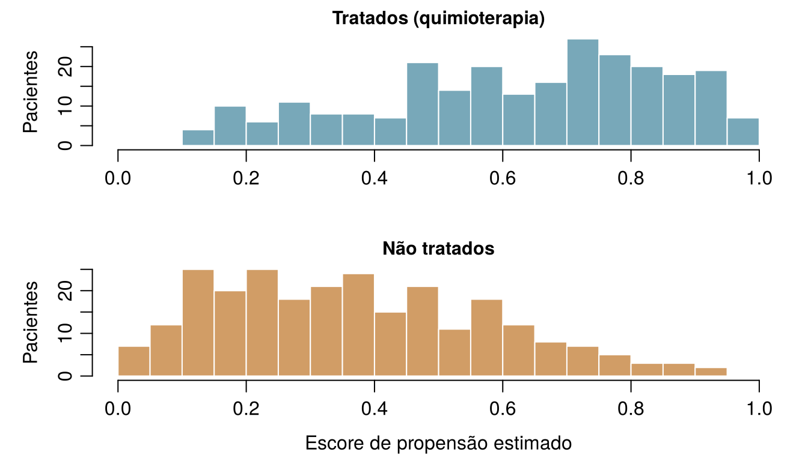

flowchart TD
S["O que você vai fazer com a resposta?"] --> Q1{"Você vai mudar algo por causa dela?<br/>tratar, suspender, investir, definir uma política"}
Q1 -- "sim" --> I["INTERVIR<br/>O que aconteceria se fizéssemos A?<br/>Exige um ensaio, ou um diagrama causal<br/>mais ajuste (este capítulo)"]
Q1 -- "não" --> Q2{"Você precisa de um número para uma pessoa nova<br/>cujo desfecho ainda não é conhecido?"}
Q2 -- "sim" --> P["PREVER<br/>O que vai acontecer com esta pessoa?<br/>Aprendizado supervisionado, avaliado em dados não vistos<br/>(Capítulos 3 a 8)"]
Q2 -- "não" --> E["EXPLICAR / DESCREVER<br/>Que padrões existem nos dados?<br/>Associações, grupos, explicações<br/>(Capítulos 4, 10 a 12)"]
P --> Q3{"A predição será usada<br/>para escolher um tratamento?"}
Q3 -- "sim" --> I
Q3 -- "não" --> P2["A predição basta:<br/>verifique calibração e transportabilidade"]
13 Da predição à causalidade
Cinco perguntas que as equipes da UTI Ala 7 e do ONCO-1 poderiam fazer. Cada uma delas é uma pergunta sobre o que vai prever um desfecho para alguém, sobre como explicar padrões que já estão nos dados, ou sobre o que aconteceria se interviéssemos? Arrisque seu melhor palpite: a primeira seção explica a diferença.
| Pergunta | Tipo de pergunta |
|---|---|
| Qual é a probabilidade de Aoife desenvolver LRA nas próximas 48 horas? | |
| Se a adesão fosse elevada a pelo menos 90 % em todos os pacientes, quantos casos de LRA seriam evitados? | |
| Os pacientes do hospital D têm, em média, aumentos de creatinina maiores do que os do hospital A? | |
| O tumor da paciente #0042 teria diminuído menos sem quimioterapia? | |
| Qual dos três pacientes desta noite tem maior probabilidade de precisar de diálise? |
Como usar este capítulo
Começando por aqui?
Este capítulo toma emprestadas algumas ideias de capítulos anteriores. Em resumo:
- Dados observacionais e experimentais (Definição 1.2). Os dados observacionais registram o que aconteceu no cuidado de rotina; os dados experimentais vêm de um delineamento em que o pesquisador atribui a exposição, de preferência por sorteio, como no ensaio ONCO-1.
- Confundimento, primeiro olhar (Seção 1.10). Na UTI Ala 7, os pacientes mais graves (escore SOFA mais alto) recebem menos do protocolo assistencial e têm aumentos de creatinina maiores. Uma regressão do aumento da creatinina apenas na adesão dá −0,53 por unidade de adesão; acrescentar o SOFA dá −0,30; o valor usado para simular os dados é −0,28.
- Coeficientes (Capítulo 4, Capítulo 5). Em um modelo linear, \(\beta_j\) é a diferença esperada no desfecho entre dois pacientes que diferem em uma unidade de \(x_j\) e são iguais nos demais preditores do modelo; em um modelo logístico, \(e^{\beta_j}\) é uma razão de chances. Ambos são associações.
- Esperança (Capítulo 2). \(\mathbb{E}[Y]\) é a média de \(Y\) a longo prazo; \(\mathbb{E}[Y \mid A = 1]\) é a média entre aqueles com \(A = 1\).
- Conjuntos de treino e de teste, vazamento (Seção 1.8, Capítulo 3). Os modelos preditivos são avaliados em pacientes que eles não viram. No ONCO-1, os genes 08, 14 e 19 são cópias ruidosas do desfecho (vazamento); os genes que realmente influenciam a redução do tumor são o 01, o 05 e o 12.
| Exemplo | Quem ou o quê | Desfecho | Rostos que você vai conhecer |
|---|---|---|---|
| 1 UTI Ala 7 | 1.250 pacientes de UTI em 4 hospitais | variação da creatinina em 48 h (lesão renal aguda se ≥ 0,3 mg/dL) | Aoife (71 anos, sepse, risco limítrofe), Tomás (54 anos, risco baixo), Priya (38 anos, risco alto); a Dra. Emma Walsh; Seán, o farmacêutico |
| 2 Ensaio ONCO-1 | 1.000 pacientes randomizados para quimioterapia ou não | redução do tumor (%) | pacientes #0042 e #0917 |
| 3 HomeBeat | 500 pessoas que usam um relógio inteligente em casa | escore de estresse, evento de deterioração | Lena |
| 4 CellWorks | 420 lotes de produção de uma terapia celular | escore de potência | lote CW-118 |
Os quatro conjuntos de dados são simulados e podem ser baixados no apêndice de dados. A apresentação completa está na Seção 1.1.
Este capítulo passa do que vai acontecer para o que aconteceria se. Ele tem oito seções e um Lab, sete verificações rápidas, três widgets “Experimente”, um desafio e três missões de programação em R e Python. Reserve cerca de duas horas. A matemática é leve (quase só médias), mas as ideias são sutis; então leia com calma e execute o código.
Notação em resumo (apenas para consulta)
| Símbolo | Significado | Seção |
|---|---|---|
| \(A\) | tratamento ou exposição (quimioterapia sim/não; adesão ao protocolo) | Seção 13.2 |
| \(Y\) | desfecho (redução do tumor; variação da creatinina) | Seção 13.2 |
| \(Y(1)\), \(Y(0)\), \(Y(a)\) | desfechos potenciais: o desfecho que um paciente teria com tratamento, sem tratamento ou com o nível de exposição \(a\) | Seção 13.2 |
| \(\mathbb{E}[Y(1)] - \mathbb{E}[Y(0)]\) | efeito médio do tratamento (ATE) | Seção 13.2 |
| \(\tau(\mathbf{x})\) | efeito médio condicional do tratamento (CATE) para pacientes com atributos \(\mathbf{x}\) | Seção 13.2 |
| \(L\) | um fator de confusão, ou um conjunto deles | Seção 13.3 |
| \(e(\mathbf{x})\) | escore de propensão: probabilidade de tratamento dados os atributos \(\mathbf{x}\) | Seção 13.5 |
| \(w_i\) | peso pelo inverso da probabilidade do paciente \(i\) | Seção 13.5 |
A lista completa está na página de notação.
13.1 Três tipos de pergunta
Todos os capítulos até aqui construíram um modelo que prevê: a partir do que se sabe hoje sobre um paciente, estimar o que vai acontecer com ele. A predição é enormemente útil (diz a Emma que o risco de Aoife está perto do limiar e que o de Tomás é baixo), mas é apenas uma de três coisas que pedimos aos dados (Hernán, Hsu, e Healy 2019):
- Prever. O que vai acontecer com este paciente? Uma boa predição usa qualquer atributo que carregue informação, seja qual for o motivo pelo qual a carrega. Ela é avaliada em pacientes novos, pelo seu erro, sua discriminação e sua calibração (Capítulos 3–8).
- Explicar (ou descrever). Que padrões existem nos dados, e como os grupos diferem? Quantos pacientes desenvolveram LRA em cada hospital; quais genes estão associados à resposta; quais pacientes formam grupos naturais (Capítulos 4, 10–12). São resumos do mundo tal como ele foi.
- Intervir. O que aconteceria se mudássemos algo? Se déssemos quimioterapia, suspendêssemos um medicamento, elevássemos a adesão ao protocolo, financiássemos uma enfermeira. Essa é uma pergunta causal: ela trata de um mundo que não observamos.
O terceiro tipo é a matéria de que as decisões são feitas: cada alternativa do conjunto \(\mathcal{A}\) de Emma é uma ação, e escolher entre ações exige saber o que cada uma causaria. Na prática, o tipo “explicar” muitas vezes desliza discretamente para o terceiro. “Os pacientes com adesão alta evoluem melhor” é uma descrição; “portanto, elevar a adesão fará os pacientes evoluírem melhor” é uma afirmação causal que a descrição, sozinha, não sustenta.
Um exemplo clássico vem das salas de aula. Dedos manchados de amarelo preveem muito bem o câncer de pulmão: quem os tem tem uma probabilidade muitas vezes maior de desenvolvê-lo. Um modelo de risco poderia usá-los com proveito. Mas ninguém preveniria o câncer de pulmão esfregando os dedos até ficarem limpos, porque as manchas não causam o câncer. Ambos são consequências de um terceiro fator, o tabagismo, cujo papel causal foi estabelecido por uma epidemiologia cuidadosa (Doll e Hill 1950; Hill 1965). Os dedos amarelos são um bom preditor e um alvo de intervenção inútil.
O hospital de Seán quer um modelo para decidir em quais pacientes de UTI a dose de vancomicina deve ser reduzida para proteger os rins. Um fornecedor oferece um modelo que prevê LRA com AUC de 0,85. Que tipo de pergunta o hospital está realmente fazendo?
13.2 Intervenções e contrafactuais
Para fazer perguntas causais com precisão, precisamos de uma linguagem para “o que aconteceria se”. A usada na medicina e na epidemiologia é a dos desfechos potenciais, desenvolvida por Neyman para experimentos (Splawa-Neyman, Dabrowska, e Speed 1990) e por Rubin para estudos observacionais (Rubin 1974; Holland 1986; Hernán e Robins 2020).
Definição 13.1 (Intervenção e contrafactual) Uma intervenção fixa uma variável em um valor escolhido (dar quimioterapia, fixar a adesão em 90 %) em vez de deixá-la assumir o valor que assumiria por conta própria. Um contrafactual é uma afirmação sobre o que teria acontecido sob uma intervenção que, de fato, não ocorreu: “se Aoife tivesse recebido o pacote, a creatinina dela teria…”.
Escreva \(A\) para o tratamento (ou exposição) e \(Y\) para o desfecho. No ONCO-1, \(A = 1\) significa quimioterapia e \(A = 0\), nenhuma; \(Y\) é a redução do tumor em porcentagem.
Definição 13.2 (Desfechos potenciais) Cada paciente \(i\) tem dois desfechos potenciais: \(Y_i(1)\), o desfecho que ela teria se fosse tratada, e \(Y_i(0)\), o desfecho que ela teria se não fosse tratada. Para uma exposição com muitos níveis, como a adesão ao protocolo, há um desfecho potencial \(Y_i(a)\) para cada nível \(a\). O efeito causal individual é a diferença \(Y_i(1) - Y_i(0)\).
A paciente #0042 (registro P5440 do ensaio), a paciente de 37 anos com um tumor de grau G1 que você conheceu nos Capítulos 4 e 5, recebeu quimioterapia no ONCO-1, e o tumor dela encolheu 36,6 %: esse é \(Y_{0042}(1)\). Nunca observaremos \(Y_{0042}(0)\), a redução que o tumor dela teria apresentado sem quimioterapia, porque ela não pode ao mesmo tempo recebê-la e não recebê-la. A quase gêmea dela, #0917 (P9541: mesmo grau, mesma dose e mesmo escore de desempenho, 46 anos), encolheu apenas 20,4 %, e o modelo logístico lasso do Capítulo 5 deu a elas probabilidades de resposta alta de 0,75 e 0,18. Essas são predições do que acontece sob quimioterapia; nenhuma diz o que a quimioterapia fez por qualquer uma delas. Esse é o problema fundamental da inferência causal (Holland 1986): para cada paciente, no máximo um desfecho potencial é observado; os demais são contrafactuais. Por isso, os efeitos causais individuais nunca são vistos diretamente.
Só em uma simulação podemos preencher as duas colunas, porque ali escrevemos as regras que geram o desfecho e podemos executá-las de novo com a exposição alterada, mantendo todo o resto de cada paciente igual (a Seção 13.6 explica como). A Tabela 13.1 mostra seis pacientes anteriores da UTI Ala 7, com a adesão e a variação da creatinina registradas e dois dos seus desfechos potenciais, com 50 % e com 90 % de adesão.
| Paciente | SOFA | Adesão observada | Variação observada (mg/dL) | Y(0.5) | Y(0.9) | Efeito de 50 % → 90 % |
|---|---|---|---|---|---|---|
| ICU_0002 | 7 | 0.887 | 0.242 | 0.350 | 0.238 | −0.112 |
| ICU_0011 | 3 | 0.469 | 0.373 | 0.364 | 0.252 | −0.112 |
| ICU_0025 | 8 | 0.669 | 0.609 | 0.656 | 0.544 | −0.112 |
| ICU_0048 | 8 | 0.907 | 0.053 | 0.167 | 0.055 | −0.112 |
| ICU_0103 | 7 | 0.907 | 0.552 | 0.666 | 0.554 | −0.112 |
| ICU_0777 | 9 | 0.594 | 0.556 | 0.582 | 0.470 | −0.112 |
Observe a paciente ICU_0048. A adesão registrada dela foi 0,907, muito perto de 90 %, e a variação observada (0,053) é quase exatamente o seu \(Y(0.9)\) (0,055). Isso é a consistência: o desfecho observado é o desfecho potencial sob a exposição efetivamente recebida. Na última coluna todos os pacientes têm o mesmo efeito, −0,112 mg/dL, porque a regra do simulador é uma reta sem interações (\(-0.28 \times 0.4\)). Pacientes reais certamente diferem no quanto se beneficiam.
Como os efeitos individuais não podem ser observados, miramos nas médias.
Definição 13.3 (Efeito médio do tratamento e efeito médio condicional) O efeito médio do tratamento (ATE, do inglês average treatment effect) em uma população é \[ \text{ATE} = \mathbb{E}[Y(1)] - \mathbb{E}[Y(0)] , \qquad(13.1)\] a diferença entre o desfecho médio se todos fossem tratados e o desfecho médio se ninguém fosse. O efeito médio condicional do tratamento (CATE) é o mesmo contraste dentro de um subgrupo de pacientes com atributos \(\mathbf{x}\): \(\tau(\mathbf{x}) = \mathbb{E}[Y(1) - Y(0) \mid \mathbf{X} = \mathbf{x}]\).
Compare a Equação 13.1 com o que os dados mostram diretamente: \[ \mathbb{E}[Y \mid A = 1] - \mathbb{E}[Y \mid A = 0] , \qquad(13.2)\] a diferença entre o desfecho médio de quem por acaso foi tratado e o de quem por acaso não foi. A Equação 13.1 compara a mesma população sob duas intervenções; a Equação 13.2 compara dois grupos diferentes de pessoas. As duas coincidem apenas quando tratados e não tratados são parecidos em tudo o que afeta o desfecho, isto é, quando são permutáveis (exchangeable). Na UTI Ala 7 eles não são: os pacientes com adesão alta estão, em média, menos graves.
Hernán e Robins (2020) listam três condições sob as quais um efeito causal pode ser calculado a partir dos dados:
- Permutabilidade: dadas as covariáveis medidas, quem recebeu qual tratamento não tem relação com os desfechos potenciais (ausência de confundimento não medido).
- Positividade: todo tipo de paciente teve uma chance real de receber cada tratamento.
- Consistência: o tratamento é definido com clareza suficiente para que “o desfecho sob \(A = a\)” signifique uma única coisa, e o desfecho observado é igual ao desfecho potencial sob o tratamento recebido.
A consistência parece um preciosismo até você tentar uma pergunta real. No Capítulo 4, Seán perguntou se elevar a albumina de Aoife protegeria os rins dela. A albumina pode estar mais alta porque a paciente está menos inflamada, mais bem nutrida ou porque recebeu uma infusão de albumina; são intervenções diferentes, que podem ter efeitos diferentes. Um conjunto de dados com níveis de albumina que variam naturalmente diz pouco sobre infusões. Antes de perguntar “qual é o efeito de \(A\)?”, diga exatamente o que você faria.
Um analista diz: “Para encontrar o efeito da quimioterapia na paciente #0917, compare a redução do tumor dela com quimioterapia com a redução sem quimioterapia.” Qual é a dificuldade?
13.3 Desenhando pressupostos: diagramas causais
Os desfechos potenciais dizem o que queremos estimar. Para decidir como, precisamos declarar o que acreditamos sobre a maneira como as variáveis influenciam umas às outras. A forma mais transparente é um desenho.
Definição 13.4 (Grafo acíclico dirigido (DAG)) Um grafo acíclico dirigido causal (DAG, do inglês directed acyclic graph) é um diagrama em que cada variável é um nó e uma seta \(X \rightarrow Z\) significa “\(X\) influencia \(Z\) diretamente”. Dirigido: toda seta tem uma direção. Acíclico: seguindo as setas, nunca é possível voltar ao ponto de partida. As setas ausentes são os pressupostos mais fortes do diagrama: cada uma delas diz “nenhum efeito direto” (Pearl 1995, 2009; Greenland, Pearl, e Robins 1999).
Qualquer caminho entre tratamento e desfecho é uma cadeia de setas, percorrida em qualquer direção. Três estruturas pequenas bastam para entender qualquer DAG (Figura 13.2).
Definição 13.5 (Fator de confusão) Um fator de confusão é uma causa comum do tratamento e do desfecho (\(A \leftarrow L \rightarrow Y\)). Ele abre um caminho backdoor (“pela porta dos fundos”) de \(A\) para \(Y\), um caminho que começa com uma seta entrando em \(A\) e ao longo do qual a associação flui sem nenhum efeito de \(A\). Ajustar para \(L\), comparando iguais com iguais, bloqueia esse caminho.
Definição 13.6 (Mediador) Um mediador fica em um caminho causal do tratamento ao desfecho (\(A \rightarrow M \rightarrow Y\)): ele carrega parte do efeito. Ajustar para ele remove a parte do efeito que passa por ele, e o resultado deixa de ser o efeito total de \(A\).
Definição 13.7 (Colisor) Um colisor (collider) é uma variável causada por duas outras no mesmo caminho (\(A \rightarrow C \leftarrow Y\)). Um caminho que passa por um colisor permanece fechado enquanto não mexemos no colisor. Ajustar para ele, ou selecionar pacientes de acordo com ele, abre o caminho e cria uma associação que nada tem a ver com o efeito de \(A\) (Hernán, Hernández-Díaz, e Robins 2004; Cole et al. 2010).
O colisor é o menos intuitivo dos três. Suponha que, na população geral, duas doenças ocorram de forma independente, e que qualquer uma delas baste para levar uma pessoa ao hospital. Entre os pacientes internados, alguém que não tem a primeira doença deve ter sido internado por algum motivo, muitas vezes a segunda. Assim, nos dados hospitalares as duas doenças parecem associadas negativamente, embora fora do hospital não tenham relação. Esse é o viés de Berkson (Berkson 1946): estar internado é um colisor, e estudar apenas pacientes internados condiciona nele. Os genes com vazamento do ONCO-1 são outro exemplo: os genes 08, 14 e 19 foram gerados a partir do desfecho, portanto são seus descendentes, e ajustar para eles distorceria o efeito da quimioterapia exatamente como distorceu as estimativas de desempenho no Capítulo 3.
As três estruturas se combinam em uma única regra.
Definição 13.8 (Critério backdoor) Um conjunto de variáveis medidas \(L\) é suficiente para estimar o efeito causal de \(A\) sobre \(Y\) por ajuste se (1) bloqueia todos os caminhos backdoor entre \(A\) e \(Y\) e (2) não contém nenhum descendente de \(A\): nenhum mediador, nem colisor ou outra variável causada pelo tratamento (Pearl 1995, 2009). Então, dentro dos níveis de \(L\), pacientes tratados e não tratados são permutáveis.
Para os dedos amarelos, o diagrama é uma bifurcação: tabagismo → dedos amarelos e tabagismo → câncer de pulmão, sem seta entre dedos e câncer. O caminho backdoor dedos ← tabagismo → câncer está aberto, então os dois estão associados; ajustar para o tabagismo o fecha, e entre os fumantes (ou entre os não fumantes) os dedos deixam de prever o câncer.
Dedos amarelos. Nesta população ilustrativa, 30 % das pessoas fumam. O tabagismo mancha os dedos e causa câncer de pulmão; as manchas em si não causam nada. Os controles deslizantes definem a proporção de fumantes com dedos manchados e o risco de câncer de pulmão deles (entre os não fumantes, 5 % têm dedos manchados e 1 % desenvolve câncer de pulmão). Compare o risco relativo dos “dedos amarelos” na população inteira com o risco relativo entre os fumantes e entre os não fumantes, e com o que conseguiria uma intervenção que limpasse os dedos de todo mundo.
Um estudo recruta apenas pacientes internados em uma UTI e descobre que, entre eles, o diabetes está associado a uma mortalidade menor. Tanto o diabetes quanto uma doença aguda grave tornam a internação na UTI mais provável. Qual é a explicação mais provável?
13.3.1 O diagrama da UTI Ala 7
Como a UTI Ala 7 é simulada, conhecemos seu DAG verdadeiro: é o código gerador de sim_ward7_icu_aki.R, desenhado como setas (Figura 13.3). A gravidade (SOFA (Vincent et al. 1996)) reduz a adesão ao protocolo, piora a pressão arterial, eleva a ureia (BUN) e a PCR e reduz a albumina, e tudo isso afeta o aumento da creatinina. A idade age por meio da creatinina basal. A adesão afeta o desfecho diretamente e não tem nenhuma outra consequência nos dados.
Há exatamente um caminho backdoor, adesão ← SOFA → creatinina (com ramificações pelos marcadores de gravidade, que partem todos do SOFA). Ajustar para o SOFA o bloqueia; nada nos dados é descendente da adesão. Assim, pelo critério backdoor, \(\{\text{SOFA}\}\) é um conjunto de ajuste suficiente, e é por isso que a estimativa ajustada do Capítulo 1 ficou perto da verdade.
Problemas reais raramente são tão arrumados, então o widget abaixo usa a UTI Ala 7, versão ampliada: uma segunda unidade simulada, com as mesmas regras e mais três variáveis registradas cujos papéis conhecemos. O quadro de enfermagem afeta a adesão e nada mais. O protocolo suspende medicamentos nefrotóxicos, então a adesão reduz a exposição a medicamentos nefrotóxicos, que por sua vez eleva a creatinina: um mediador. E o protocolo pede dosagens de creatinina a cada poucas horas, enquanto clínicos preocupados repetem o exame quando a creatinina sobe; assim, o número de dosagens de creatinina solicitadas é causado tanto pela adesão quanto pelo desfecho: um colisor. O efeito total da adesão continua sendo −0,28 por unidade (−0,18 diretamente, cerca de −0,10 por meio dos medicamentos nefrotóxicos).
Escolha um conjunto de ajuste. Marque as variáveis para as quais você ajustaria em uma regressão linear da variação da creatinina na adesão e veja a estimativa se mover em relação à verdade (linha tracejada). As variáveis ajustadas ficam destacadas no diagrama. Meta: encontrar o conjunto que dá uma estimativa não viesada com o intervalo mais estreito.
O widget esconde três lições. Primeira: mais ajuste nem sempre é melhor. Acrescentar o colisor ao SOFA move a estimativa de −0,27 para −0,57, longe da verdade, e com um intervalo mais estreito: precisa e errada. Segunda: ajustar para o mediador dá −0,19, aproximadamente o efeito direto: a resposta correta para outra pergunta (“e se a adesão mudasse, mas os medicamentos nefrotóxicos não?”). Terceira: as variáveis que afetam apenas o desfecho (creatinina basal) tornam a estimativa mais nítida, enquanto as que afetam apenas o tratamento (quadro de enfermagem) a deixam mais borrada. Nenhum teste estatístico aplicado aos dados consegue distinguir esses papéis; só o diagrama consegue.
No ONCO-1, a quimioterapia reduz os tumores em parte diminuindo um marcador de proliferação medido na semana 6. Um analista estima o efeito da quimioterapia sobre a redução na semana 12 ajustando para o marcador da semana 6 e encontra um efeito muito menor do que a comparação simples do ensaio. Qual afirmação está certa?
A pergunta é o efeito de uma variável A sobre um desfecho Y. Que papel a terceira variável desempenha em cada caso?
- A: prescrição de estatina. Y: infarto do miocárdio. Terceira variável: colesterol LDL medido seis meses após o início da estatina. Mediador
- A: adesão ao protocolo na UTI Ala 7. Y: variação da creatinina. Terceira variável: escore SOFA na internação. Fator de confusão
- A: vacinação. Y: influenza grave. Terceira variável: ser testado para influenza em um hospital (mais provável se as pessoas vacinadas forem acompanhadas mais de perto e se os sintomas forem graves). Colisor
- A: quimioterapia no ONCO-1. Y: redução do tumor. Terceira variável: ser convidado para um subestudo de imagem, oferecido aos pacientes cujos tumores diminuíram muito e aos pacientes com efeitos adversos da quimioterapia. Colisor
- A: quimioterapia no ONCO-1. Y: redução do tumor. Terceira variável: o grupo sanguíneo do paciente, sem relação com nenhum dos dois. Nenhum destes
- A: dedos amarelos. Y: câncer de pulmão. Terceira variável: tabagismo. Fator de confusão
13.4 Randomização: o ONCO-1
Se o confundimento é o problema, a solução mais limpa é remover as setas que entram no tratamento. É isso que uma moeda faz.
Definição 13.9 (Randomização) Em um experimento randomizado, o tratamento é atribuído por um mecanismo de acaso que os pesquisadores controlam e que não tem relação com nenhuma característica dos pacientes. Então nenhuma seta entra em \(A\) exceto a que vem da moeda, não há caminho backdoor, e os grupos tratado e não tratado são permutáveis, tanto nas características medidas quanto nas não medidas (Fisher 1935; Hernán e Robins 2020, cap. 2).
Na amostra do ONCO-1, de 1000 pacientes, 496 foram randomizados para quimioterapia e 504 para nenhuma quimioterapia. A randomização não torna os dois braços idênticos, mas torna suas diferenças pequenas e devidas apenas ao acaso. Uma forma padrão de verificar isso é a diferença média padronizada (SMD, do inglês standardised mean difference): a diferença entre as médias dos braços dividida pelo desvio-padrão combinado. Valores abaixo de cerca de 0,1 costumam ser considerados um bom equilíbrio (Austin 2011). A primeira coluna da Tabela 13.3 mostra que todas as covariáveis estão equilibradas no ensaio.
Como os braços são permutáveis, a comparação mais simples estima o efeito médio do tratamento: a redução média foi de 37,8 % com quimioterapia e de 4,9 % sem, uma diferença de 32,9 pontos percentuais (intervalo de confiança de 95 % 31,8 a 34,0). Nenhum modelo, nenhum ajuste, nenhum pressuposto sobre quais genes importam: esse é o poder da randomização. É por isso que as agências reguladoras exigem ensaios randomizados antes de aprovar tratamentos, e por isso um novo medicamento descoberto com IA ainda precisa passar por um (o Capítulo 19 volta a esse ponto).
A randomização também tem limites. Os ensaios são caros e lentos; incluem pacientes selecionados, que podem diferir dos tratados na prática; algumas exposições (tabagismo, gravidade, o quadro de enfermagem de um hospital) não podem ser randomizadas; e os pacientes nem sempre recebem o tratamento para o qual foram designados. Por esses motivos, a maior parte dos dados de um sistema de saúde é observacional, e a próxima seção trata de analisá-los como se viessem de um ensaio.
A resposta do ensaio. No ONCO-1 o tratamento foi randomizado, então a diferença entre a redução média dos dois braços estima o efeito da quimioterapia. Complete a última linha.
O primeiro termo já usa mean(); o segundo precisa usar a mesma função.
mean(treated) - mean(control)O primeiro termo já usa .mean(); o segundo precisa usar o mesmo método.
treated.mean() - control.mean()Por que a randomização remove o confundimento até por fatores que ninguém mediu?
13.5 Ajuste sem randomização
Quando o tratamento não foi randomizado, tentamos tornar a comparação justa por meio do ajuste: comparar pacientes tratados e não tratados que são parecidos em todos os fatores de confusão. O critério backdoor nos diz para quais variáveis ajustar; esta seção mostra como. Todos os métodos aqui se apoiam no mesmo pressuposto (o de que o conjunto escolhido bloqueia todos os caminhos backdoor, isto é, ausência de confundimento não medido) e diferem na forma como usam os dados.
13.5.1 Ajuste por regressão na UTI Ala 7
A forma mais simples é a que o Capítulo 1 usou: colocar os fatores de confusão em um modelo de regressão junto com o tratamento. Se a forma do modelo estiver correta, o coeficiente do tratamento estima o efeito. A Tabela 13.2 mostra o coeficiente da adesão sob vários conjuntos de ajuste, com o valor usado na simulação para comparação.
| Ajustado para | Estimativa | IC de 95 % |
|---|---|---|
| Nada (ingênuo) | −0.53 | −0.62 a −0.44 |
| SOFA | −0.30 | −0.38 a −0.22 |
| SOFA e todas as outras variáveis registradas | −0.29 | −0.35 a −0.23 |
| Todas as variáveis registradas, exceto o SOFA | −0.40 | −0.47 a −0.34 |
| Apenas a menor pressão arterial (um proxy do SOFA) | −0.53 | −0.61 a −0.44 |
| Lactato e creatinina basal (causas apenas do desfecho) | −0.51 | −0.60 a −0.43 |
Só os conjuntos que contêm o SOFA chegam perto de −0,28. Ajustar para todas as variáveis registradas, exceto o SOFA, ajuda um pouco, porque a pressão arterial, o BUN, a PCR e a albumina são proxies imperfeitos da gravidade, mas a estimativa (−0,40) continua longe: confundimento residual. Ajustar apenas para causas do desfecho (lactato, creatinina basal) não faz nada pelo viés. Execute o código para reproduzir as primeiras linhas.
Bloqueie o caminho backdoor. Usando o diagrama da UTI Ala 7 (Figura 13.3), acrescente ao modelo a variável que bloqueia o único caminho backdoor da adesão ao protocolo para a variação da creatinina. A última linha imprime o coeficiente da adesão.
O fator de confusão é o escore de gravidade registrado na internação. O nome da coluna tem quatro letras.
fit <- lm(delta_creatinine_48h ~ protocol_adherence + sofa, data = icu)Acrescente o nome da coluna de gravidade, como string: quatro letras.
cols = ["protocol_adherence", "sofa"]O ajuste por regressão funciona bem quando o modelo do desfecho está correto. Com muitos fatores de confusão, relações não lineares ou um tratamento binário dado a tipos muito diferentes de pacientes, é fácil errar o modelo sem perceber. Os três métodos seguintes transferem o esforço de modelar o desfecho para modelar o tratamento.
13.5.2 O ONCO-1 na prática de rotina
Para ter uma referência, transformamos o ensaio ONCO-1 em um estudo observacional. Imagine que, em vez de uma moeda, os oncologistas tivessem escolhido: ofereceram quimioterapia com mais frequência a pacientes mais jovens e em melhores condições, a tumores de grau mais alto e a pacientes com baixa expressão do gene_05 (que um estudo anterior havia associado a uma resposta ruim). Imitamos isso mantendo cada paciente do ensaio com uma probabilidade que depende do braço e dessas características (sim_ch13_onco1_routine.R). O resultado, onco1_routine.csv, tem 509 pacientes, dos quais 252 tratados. Como todos os pacientes vêm do ensaio, sabemos qual deveria ser a resposta certa: os 32,9 pontos percentuais do ensaio.
Nesse conjunto de dados de “prática de rotina”, os pacientes tratados estão em melhores condições (escore de desempenho médio de 0,40 contra 0,67) e têm gene_05 mais baixo, e ambas as coisas preveem uma redução maior do tumor. A comparação ingênua dá 38,7 pontos percentuais, uma superestimação de cerca de 6 pontos: parte do benefício aparente é o prognóstico melhor dos pacientes que os oncologistas escolheram tratar.
Definição 13.10 (Escore de propensão) O escore de propensão (propensity score) de uma paciente com covariáveis \(\mathbf{x}\) é a sua probabilidade de receber o tratamento, \(e(\mathbf{x}) = P(A = 1 \mid \mathbf{X} = \mathbf{x})\). Rosenbaum e Rubin (1983) mostraram que, se ajustar para \(\mathbf{X}\) remove o confundimento, então ajustar para o número único \(e(\mathbf{X})\) também remove: pacientes tratados e não tratados com o mesmo escore de propensão são, em média, parecidos em todas as covariáveis que entraram nele.
Em dados observacionais o escore de propensão é desconhecido, então o estimamos, geralmente com uma regressão logística do tratamento nos fatores de confusão (Capítulo 5). Ele é um modelo da decisão dos médicos, não do desfecho. Dois alertas: inclua os fatores de confusão (causas do tratamento que também afetam o desfecho), e não variáveis causadas pelo tratamento. dose_intensity é zero para todo paciente não tratado e preveria o tratamento perfeitamente, mas é uma consequência da decisão; e não julgue o modelo de propensão pela sua AUC, porque o que importa é o equilíbrio que ele alcança (Austin 2011).
Observe os escores estimados antes de ir adiante (Figura 13.5). Para que um ajuste seja possível, os dois histogramas precisam se sobrepor: para cada tipo de paciente tratado deve haver pacientes não tratados com escore semelhante, e vice-versa. Isso é a positividade na prática. Onde os grupos não se sobrepõem, qualquer método precisa extrapolar.

Seguem três formas de usar o escore de propensão.
Definição 13.11 (Ponderação pelo inverso da probabilidade (IPW)) A ponderação pelo inverso da probabilidade (IPW, do inglês inverse probability weighting) dá a cada paciente tratado o peso \(w_i = 1/e(\mathbf{x}_i)\) e a cada paciente não tratado \(w_i = 1/\{1 - e(\mathbf{x}_i)\}\), e então compara médias ponderadas: \[ \widehat{\text{ATE}}_{\text{IPW}} = \frac{\sum_{i:A_i=1} w_i\, y_i}{\sum_{i:A_i=1} w_i} - \frac{\sum_{i:A_i=0} w_i\, y_i}{\sum_{i:A_i=0} w_i} . \qquad(13.3)\] A ponderação cria uma pseudopopulação em que o tratamento já não depende das covariáveis, como em um ensaio (Hernán e Robins 2020, cap. 12; Austin 2011).
A intuição: uma paciente tratada com \(e(\mathbf{x}) = 0.2\) pertence a um tipo de paciente que geralmente fica sem tratamento; ela é rara no grupo tratado, então precisa representar cinco pacientes como ela. Uma paciente tratada com \(e(\mathbf{x}) = 0.9\) representa só cerca de uma.
Definição 13.12 (Pareamento) O pareamento (matching) forma pares entre cada paciente tratado e um (ou mais) pacientes não tratados semelhantes (aqui, com escores de propensão próximos) e descarta os que não têm um bom par. O desfecho é então comparado dentro dos pares. Como mantém os pacientes tratados e encontra controles para eles, o pareamento geralmente estima o efeito nos tratados (ATT) em vez do ATE (Stuart 2010).
A estratificação pelo escore de propensão (comparar tratados e não tratados dentro, por exemplo, dos seus quintis) é uma quarta opção com a mesma lógica (Rosenbaum e Rubin 1983). Seja qual for o método, verifique se ele realmente equilibrou as covariáveis: a Tabela 13.3 mostra as SMDs antes e depois.
| Covariável | Ensaio | Prática de rotina | Após IPW | Após pareamento | |
|---|---|---|---|---|---|
| age | Idade | 0.05 | −0.42 | 0.03 | 0.02 |
| grade_G3 | Grau 3 | 0.00 | 0.34 | 0.01 | 0.05 |
| grade_G1 | Grau 1 | 0.05 | −0.17 | −0.05 | 0.06 |
| performance | Escore de desempenho | −0.07 | −0.42 | −0.02 | 0.05 |
| gene_05 | gene_05 | 0.02 | −0.75 | −0.06 | −0.06 |
A prática de rotina começa com grandes desequilíbrios (gene_05 em −0,75); tanto a ponderação quanto o pareamento levam todas as covariáveis para baixo de 0,1, perto do equilíbrio do ensaio, mas apenas para as covariáveis do modelo de propensão. Nada consegue equilibrar o que não foi medido. A Tabela 13.4 reúne as estimativas.
| Método | Estimativa |
|---|---|
| Ensaio randomizado (referência, ATE) | 32.9 |
| Comparação ingênua | 38.7 |
| Ajuste por regressão | 33.3 |
| Ponderação pelo inverso da probabilidade (ATE) | 33.6 |
| Pareamento pelo escore de propensão (144 pares) | 33.4 |
As três estimativas ajustadas ficam a cerca de um ponto do ensaio. O pareamento tem um espírito um pouco diferente: estima o efeito entre os pacientes tratados que puderam ser pareados. Neste conjunto de dados, 108 pacientes tratados, sobretudo os de escores de propensão mais altos, não tiveram um par não tratado dentro do caliper e foram descartados; assim, a estimativa pareada descreve os pacientes tratados mais “comuns”.
Com que força os oncologistas escolheram? O controle deslizante define o quanto o tratamento dependeu das características dos pacientes: 0 é uma moeda (um ensaio randomizado menor), 3 é uma seleção muito forte. Para cada valor, foram simulados 100 conjuntos de dados de prática de rotina; as barras mostram os 90 % centrais das estimativas e os pontos, a sua média. A linha tracejada é a resposta do ensaio. Observe a comparação ingênua se afastar, e veja o que acontece com a sobreposição dos escores de propensão e com a largura da barra da IPW à medida que a seleção fica mais forte.
À medida que a seleção cresce, os escores de propensão dos dois grupos se separam em direção a 0 e a 1. Alguns pacientes tratados com escores perto de 0 (ou não tratados perto de 1) recebem pesos enormes, e a IPW fica instável: a positividade está quase violada. O ajuste por regressão continua estreito aqui porque o seu modelo coincide com a forma como estes dados foram gerados; em dados reais isso seria um pressuposto, e com pouca sobreposição ele estaria extrapolando em silêncio. O pareamento lida com isso descartando os pacientes que não consegue parear, o que muda a população que a resposta descreve. Quando a sobreposição é pobre, a conclusão honesta muitas vezes é que os dados não conseguem responder à pergunta para todo mundo.
Pondere os pacientes. O escore de propensão ps de cada paciente do ONCO-1 na prática de rotina já foi estimado com uma regressão logística em idade, grau, escore de desempenho e gene_05. Complete os pesos dos pacientes não tratados; as últimas linhas calculam a estimativa por IPW.
A probabilidade de não ser tratado é 1 - ps.
w <- ifelse(obs$chemo == 1, 1 / ps, 1 / (1 - ps))A probabilidade de não ser tratado é 1 - ps.
w = np.where(obs["chemo"] == 1, 1 / ps, 1 / (1 - ps))Em um conjunto de dados observacional, quase todos os pacientes com escore de desempenho 2 ficaram sem tratamento (escores de propensão estimados abaixo de 0,02). Qual é a principal consequência para a IPW?
Todos esses métodos compartilham um pressuposto que não pode ser verificado: o de que as covariáveis medidas incluem todos os fatores de confusão. Por isso, uma análise cuidadosa começa escrevendo o ensaio que gostaria de ter conduzido (elegibilidade, estratégias de tratamento, início do seguimento, desfecho) e então emula esse ensaio-alvo (target trial) com os dados observacionais (Hernán e Robins 2016), e termina com uma análise de sensibilidade sobre o quão forte um fator de confusão não medido precisaria ser para mudar a conclusão (VanderWeele e Ding 2017). Os métodos que estimam como os efeitos variam entre pacientes, \(\tau(\mathbf{x})\), como as florestas causais (Wager e Athey 2018) e as suas versões bayesianas para vários tratamentos e desfechos correlacionados ao mesmo tempo (Sarti 2026), apoiam-se nos mesmos pressupostos.
13.6 Usando a verdade simulada
Os dados reais nunca revelam o efeito verdadeiro, então não conseguimos verificar se um ajuste funcionou. Os dados simulados conseguem, e os exemplos recorrentes deste livro foram construídos para que você possa fazer isso. O simulador da UTI Ala 7 é um modelo causal estrutural: uma lista de equações, uma por variável, cada uma calculando a variável a partir das suas causas mais um ruído aleatório (Pearl 2009). O arquivo ward7_scm.R o reescreve como uma função que reproduz icu_aki.csv exatamente e aceita uma intervenção: ela fixa uma variável em um valor escolhido para todos os pacientes, mantendo inalterado o ruído aleatório de cada paciente. Executá-la duas vezes, com a adesão fixada em 1 e em 0, dá os dois desfechos potenciais dos 1.250 pacientes, e a diferença média entre eles é o ATE verdadeiro: −0,28 por unidade de adesão.
Voltemos agora à pergunta do comitê: levar todos os pacientes a pelo menos 90 % de adesão. Nos dados, isso eleva a adesão em 21 pontos percentuais em média (os pacientes que já estão acima de 90 % não mudam). A Tabela 13.5 compara a verdade, obtida executando o simulador sob a política, com o que os coeficientes ingênuo e ajustado pelo SOFA preveriam.
| Fonte | Coeficiente | Variação média da creatinina (mg/dL) | LRA após a política | Casos de LRA evitados por 1.000 pacientes |
|---|---|---|---|---|
| Simulador (verdade) | −0.28 | −0.060 | 49.5 % | 85 |
| Coeficiente ingênuo | −0.53 | −0.114 | 42.4 % | 156 |
| Coeficiente ajustado pelo SOFA | −0.30 | −0.064 | 49.0 % | 90 |
Hoje 58 % dos pacientes da UTI Ala 7 desenvolvem LRA. A política evitaria, na verdade, cerca de 85 casos por 1.000 pacientes. O coeficiente ingênuo promete 156: quase o dobro do benefício, o suficiente para fazer uma enfermeira do protocolo parecer uma pechincha quando o retorno real é mais ou menos a metade. O coeficiente ajustado fica perto da verdade.
O simulador também mostra que um bom preditor pode dar o efeito errado. A Tabela 13.6 ajusta quatro modelos lineares no conjunto de treino compartilhado do livro e os avalia no conjunto de teste (Capítulo 3). O modelo com todas as variáveis exceto o SOFA prevê muito melhor do que o modelo só com o SOFA (pressão arterial, BUN, PCR e albumina carregam muita informação), mas o seu coeficiente da adesão é fortemente confundido. A última linha é a regressão linear (OLS) do Capítulo 4, com os mesmos dez preditores e o mesmo MAE de teste do registro de modelos (0,141 mg/dL); adesão + SOFA (0,187) prevê mais ou menos tão bem quanto a reta só com o SOFA do Capítulo 1 (0,191). O coeficiente do modelo completo fica perto da verdade só porque ele inclui o SOFA, não porque prevê bem.
| Modelo | MAE no teste (mg/dL) | Coeficiente da adesão | Simulação |
|---|---|---|---|
| Apenas adesão | 0.222 | −0.516 | −0,28 |
| Adesão + SOFA | 0.187 | −0.294 | −0,28 |
| Adesão + todas as variáveis exceto o SOFA | 0.154 | −0.409 | −0,28 |
| Adesão + todas as variáveis | 0.141 | −0.300 | −0,28 |
A verdade simulada é um laboratório, não um substituto do raciocínio: mostra se um método recupera um efeito quando os seus pressupostos valem e o quanto ele falha quando não valem. Foi assim que os métodos deste capítulo foram desenvolvidos e testados, e é assim que você pode testar qualquer fluxo de análise antes de confiar nele com dados reais.
13.7 O que isso significa para as decisões
Modelos de predição usados para decisões de intervenção. Muitos modelos clínicos são construídos para prever um desfecho e depois usados para decidir quem deve ser tratado. Duas coisas podem dar errado. Primeiro, um modelo treinado com pacientes tratados de forma rotineira prevê o risco sob o cuidado atual, tratamento incluído. Um exemplo famoso: um modelo de mortalidade por pneumonia aprendeu que os pacientes com asma tinham risco menor, porque eram rotineiramente encaminhados direto para a terapia intensiva; usado para decidir quem poderia ir para casa, ele teria mandado embora os pacientes mais vulneráveis (Caruana et al. 2015). Segundo, risco alto não é o mesmo que benefício alto: os pacientes com maior probabilidade de desenvolver LRA podem ser aqueles cujos rins um pacote consegue ajudar menos. Escolher quem tratar exige o efeito do tratamento, \(\tau(\mathbf{x})\), ou pelo menos o risco sem tratamento, estimado com métodos causais (Geloven et al. 2020).
A falácia da Tabela 2. Um artigo apresenta um modelo multivariável na “Tabela 2” e os leitores interpretam cada coeficiente como um efeito. Só o coeficiente da variável para a qual o modelo foi construído tem chance de ser causal; os outros estão ajustados para um conjunto escolhido pensando em outra variável (Westreich e Greenland 2013). A UTI Ala 7 mostra isso numericamente. Na regressão da variação da creatinina em todas as variáveis registradas, o coeficiente do SOFA é 0,041, perto do efeito direto do SOFA no simulador, 0,04, porque o modelo mantém fixos a pressão arterial, o BUN, a PCR, a albumina e a adesão. Mas um paciente com um ponto a mais de SOFA também tem pressão arterial mais baixa, BUN e PCR mais altos, albumina mais baixa e menos adesão; executar o simulador com o SOFA aumentado em um ponto dá um efeito total de 0,060, cerca de 45 % maior. Cada pergunta precisa do seu próprio conjunto de ajuste, e um único modelo raramente responde a mais de uma.
Explicações não são causas. Os métodos que explicam um modelo preditivo (importância dos atributos, valores SHAP, explicações contrafactuais) descrevem como o modelo usa as suas entradas. Eles herdam todo o confundimento dos dados: um modelo poderia explicar sua predição de câncer de pulmão pelos dedos amarelos. O Capítulo 12 trata desses métodos; leia o que eles produzem como hipóteses para uma análise causal, não como o seu resultado.
Uma tabela publicada apresenta um modelo logístico multivariável de LRA construído para estimar o efeito de um antibiótico nefrotóxico, com ajuste para idade, gravidade, creatinina basal e pressão arterial. A razão de chances da pressão arterial é 0,80 a cada 10 mmHg. Um leitor conclui que elevar a pressão arterial em 10 mmHg reduziria a chance de LRA em 20 %. Qual é o problema?
Então, o que Emma e Seán devem dizer ao comitê? Não “o coeficiente da consultoria diz que vamos reduzir a LRA à metade”. Algo como: a auditoria bruta e o modelo de risco exageram o benefício da adesão porque os pacientes mais graves recebem menos do protocolo; após o ajuste para a gravidade, nossa melhor estimativa é de cerca de −0,3 mg/dL por unidade de adesão, então a enfermeira proposta evitaria aproximadamente um caso de LRA a cada 11 pacientes, se a gravidade for o único fator de confusão importante. Se a decisão for cara, a resposta mais confiável viria de randomizar unidades ou meses para a nova enfermeira.
13.8 Onde isto se encaixa no ciclo de decisão
O Capítulo 1 definiu uma decisão como uma escolha entre alternativas em \(\mathcal{A}\), feita com o conhecimento \(\mathcal{K}\) sobre as suas consequências. Consequências de uma alternativa é outro nome para desfechos potenciais. Um modelo preditivo fornece um tipo de conhecimento (o que tende a acontecer na prática atual), e isso muitas vezes basta: para decidir quem acompanhar de perto esta noite, para planejar a capacidade de diálise, para avisar uma família. Mas quando as alternativas são ações de efeitos incertos, o elo da informação na cadeia da qualidade da decisão precisa de raciocínio causal: uma comparação randomizada, quando for possível obtê-la, e, caso contrário, um diagrama que torne os pressupostos explícitos, um ajuste que o respeite e uma verificação da sobreposição e do equilíbrio. Os valores (quanto vale um caso de LRA evitado em relação ao salário de uma enfermeira) continuam pertencendo às pessoas.
13.9 Lab: efeitos causais na UTI Ala 7 e no ONCO-1
O Lab reúne o código do capítulo em um só lugar: o ajuste na UTI Ala 7, os três conjuntos de ajuste da UTI Ala 7, versão ampliada, a referência do ensaio ONCO-1 e as quatro estimativas a partir da prática de rotina, com uma verificação de equilíbrio. Execute-o aqui ou baixe-o e execute-o no seu computador: ch13_lab.pt.R · ch13_lab.pt.py. O código usa o R (R Core Team 2024) e, em Python, pandas, NumPy e scikit-learn (McKinney 2010; Harris et al. 2020; Pedregosa et al. 2011).
R e Python concordam em tudo, exceto no pareamento, em que as duas linguagens embaralham os pacientes tratados com geradores de números aleatórios diferentes e, por isso, formam pares ligeiramente diferentes; as duas estimativas ficam perto do ensaio. Duas observações para levar adiante. Primeira: toda estimativa ajustada depende da lista de fatores de confusão: retire gene_05 do modelo de propensão e veja as estimativas voltarem em direção à ingênua. Segunda: o ensaio não precisou de nada dessa maquinaria.
13.10 Exercícios
- Dê nome à pergunta. Para cada exemplo recorrente (UTI Ala 7, ONCO-1, HomeBeat, CellWorks), escreva uma pergunta de prever, uma de explicar e uma de intervir. Na pergunta de intervir, descreva a intervenção com precisão suficiente para satisfazer a consistência.
- Desenhe. Desenhe um DAG para o efeito de uma vacina contra influenza sobre a internação hospitalar em idosos, incluindo a fragilidade (pessoas frágeis são vacinadas com menos frequência e internadas com mais frequência) e uma variável à sua escolha que seja um colisor. Para quais variáveis você ajustaria?
- Mediador ou fator de confusão? Na UTI Ala 7, Seán propõe ajustar o efeito da adesão para o “número de medicamentos nefrotóxicos suspensos nas primeiras 24 horas”. Usando a UTI Ala 7, versão ampliada, explique por que isso subestimaria o efeito total, e quando o número ajustado ainda poderia ser útil.
- Colisor por seleção. Nos dados do widget do DAG (
ward7_dag.csv), estime o efeito da adesão ajustando para o SOFA apenas entre os pacientes com sete ou mais dosagens de creatinina. Compare com a estimativa em todos os pacientes e explique a diferença. - Proxies. Faça a regressão da variação da creatinina da UTI Ala 7 apenas na adesão e na PCR. Depois, na adesão, PCR, BUN, pressão arterial e albumina. Por que a estimativa se aproxima da ajustada pelo SOFA, mas não a alcança?
- Retire um fator de confusão. No Lab, retire
gene_05do modelo de propensão. Recalcule a estimativa por IPW e a tabela de equilíbrio. O que aconteceu, e por que nenhum diagnóstico calculado apenas a partir dos dados poderia ter alertado você? - Aritmética da política. Usando a Tabela 13.5, quantos pacientes precisam atingir 90 % de adesão para que um caso de LRA seja evitado, segundo a verdade e segundo o coeficiente ingênuo? Se uma enfermeira do protocolo custa o mesmo que tratar 40 casos de LRA por ano e a UTI Ala 7 interna 1.250 pacientes por ano, a enfermeira vale a pena em cada uma das respostas?
- Tabela 2. Escolha um artigo clínico publicado com uma tabela de regressão multivariável. Para qual coeficiente o modelo foi construído? Para algum outro coeficiente, esboce um DAG que mostre por que ele pode não ser um efeito causal.
Respostas selecionadas
3. O número de medicamentos nefrotóxicos suspensos é causado pela adesão e afeta o desfecho: um mediador. Ajustar para ele remove a parte do efeito que age pela suspensão dos medicamentos, dando aproximadamente o efeito direto (cerca de −0,19 na UTI Ala 7, versão ampliada, contra um total de −0,28). Ele é útil se a pergunta for quanto do benefício vem da suspensão dos medicamentos, uma pergunta de mediação, que exige os seus próprios pressupostos.
4. Restringir aos pacientes com muitas dosagens seleciona com base em um colisor. Entre eles, um paciente com adesão baixa deve ter chegado a muitas dosagens por causa de uma creatinina em alta; assim, adesão baixa e creatinina alta aparecem juntas com mais frequência do que deveriam, e a estimativa é empurrada para longe da verdade.
5. PCR, BUN, pressão arterial e albumina dependem todos do SOFA, então ajustar para eles remove parte do confundimento. Mas cada um também tem o seu próprio ruído, e juntos eles não reproduzem o SOFA exatamente: resta um confundimento residual (−0,40 com todas as variáveis exceto o SOFA).
6. O gene_05 é um fator de confusão forte na prática de rotina; sem ele, os pesos não removem o seu desequilíbrio e a estimativa volta em direção à ingênua. A tabela de equilíbrio pareceria boa para as covariáveis que continuam no modelo. O equilíbrio só pode ser verificado para o que foi medido e incluído, e é por isso que a lista de fatores de confusão precisa vir do conhecimento do assunto, desenhada como um DAG.
7. Verdade: a política evita cerca de 85 casos por 1.000 pacientes, um a cada 12 pacientes, ou cerca de 106 por ano. Ingênuo: 156 por 1.000, um a cada 6, ou cerca de 195 por ano. Com o custo indicado, a enfermeira se paga nas duas respostas, mas a margem segundo a verdade é cerca de metade do que a análise ingênua promete, e, com uma intervenção mais cara, as duas respostas poderiam levar a decisões opostas.
13.11 Resumo
- Os dados respondem a três tipos de pergunta: prever (o que vai acontecer?), explicar (que padrões existem?) e intervir (o que aconteceria se agíssemos?). As decisões são feitas do terceiro tipo.
- Os desfechos potenciais \(Y(1)\) e \(Y(0)\) definem os efeitos causais; só um deles é observado por paciente, então estimamos médias como o ATE, \(\mathbb{E}[Y(1)] - \mathbb{E}[Y(0)]\), e o CATE. A identificação exige permutabilidade, positividade e consistência.
- Um DAG torna explícitos os pressupostos causais. Os fatores de confusão abrem caminhos backdoor e precisam ser ajustados; os mediadores carregam o efeito e não devem ser ajustados, quando se quer o efeito total; os colisores ficam fechados até que se ajuste para eles ou se selecione com base neles. O critério backdoor diz quais conjuntos bastam.
- A randomização remove todas as setas que entram no tratamento, medidas ou não; no ONCO-1, uma simples diferença de médias estima o efeito.
- Sem randomização, o ajuste por regressão, os escores de propensão, a ponderação pelo inverso da probabilidade e o pareamento podem recuperar o efeito se nenhum fator de confusão estiver faltando. Verifique a sobreposição e o equilíbrio; uma sobreposição pobre torna os pesos instáveis e as respostas mais restritas.
- A verdade simulada permite testar métodos: na UTI Ala 7, a estimativa ingênua dobra o benefício da adesão, e um modelo pode prever bem e, ainda assim, ter um coeficiente confundido.
- Não leia cada coeficiente de um modelo como um efeito (falácia da Tabela 2) e não use uma predição do risco sob o cuidado atual como se fosse uma predição do benefício.
Onde este capítulo será usado mais adiante
| Ideia deste capítulo | Onde ela reaparece |
|---|---|
| Explicações de um modelo preditivo não são efeitos causais | Capítulo 12 (interpretabilidade e explicações) |
| Ações, suas consequências e o aprendizado com elas; regimes de tratamento dinâmicos | Capítulo 14 (aprendizado por reforço) |
| Ensaios randomizados como o padrão de evidência para medicamentos descobertos por IA | Capítulo 19 (do modelo de linguagem ao assistente clínico) |
| Dados sintéticos a partir de um processo gerador conhecido | Capítulo 20 (modelos generativos) |
A seguir: as decisões deste capítulo foram tomadas uma única vez. No Capítulo 14, a decisão se repete (uma dose ajustada dia após dia), e cada ação muda o estado em que a próxima é tomada.
Referências
Austin, Peter C. 2011. «An Introduction to Propensity Score Methods for Reducing the Effects of Confounding in Observational Studies». Multivariate Behavioral Research 46 (3): 399–424. https://doi.org/10.1080/00273171.2011.568786.
Berkson, Joseph. 1946. «Limitations of the Application of Fourfold Table Analysis to Hospital Data». Biometrics Bulletin 2 (3): 47–53. https://doi.org/10.2307/3002000.
Caruana, Rich, Yin Lou, Johannes Gehrke, Paul Koch, Marc Sturm, e Noemie Elhadad. 2015. «Intelligible Models for HealthCare: Predicting Pneumonia Risk and Hospital 30-day Readmission». Em Proceedings of the 21th ACM SIGKDD International Conference on Knowledge Discovery and Data Mining, 1721–30. https://doi.org/10.1145/2783258.2788613.
Cole, Stephen R., Robert W. Platt, Enrique F. Schisterman, Haitao Chu, Daniel Westreich, David Richardson, e Charles Poole. 2010. «Illustrating Bias due to Conditioning on a Collider». International Journal of Epidemiology 39 (2): 417–20. https://doi.org/10.1093/ije/dyp334.
Doll, Richard, e A. Bradford Hill. 1950. «Smoking and Carcinoma of the Lung: Preliminary Report». British Medical Journal 2 (4682): 739–48. https://doi.org/10.1136/bmj.2.4682.739.
Fisher, Ronald A. 1935. The Design of Experiments. Edinburgh: Oliver; Boyd.
Geloven, Nan van, Sonja A. Swanson, Chava L. Ramspek, Kim Luijken, Merel van Diepen, Tim P. Morris, Rolf H. H. Groenwold, Hans C. van Houwelingen, Hein Putter, e Saskia le Cessie. 2020. «Prediction Meets Causal Inference: The Role of Treatment in Clinical Prediction Models». European Journal of Epidemiology 35 (7): 619–30. https://doi.org/10.1007/s10654-020-00636-1.
Greenland, Sander, Judea Pearl, e James M. Robins. 1999. «Causal Diagrams for Epidemiologic Research». Epidemiology 10 (1): 37–48. https://doi.org/10.1097/00001648-199901000-00008.
Harris, Charles R., K. Jarrod Millman, Stéfan J. van der Walt, et al. 2020. «Array Programming with NumPy». Nature 585 (7825): 357–62. https://doi.org/10.1038/s41586-020-2649-2.
Hernán, Miguel A., Sonia Hernández-Díaz, e James M. Robins. 2004. «A Structural Approach to Selection Bias». Epidemiology 15 (5): 615–25. https://doi.org/10.1097/01.ede.0000135174.63482.43.
Hernán, Miguel A., John Hsu, e Brian Healy. 2019. «A Second Chance to Get Causal Inference Right: A Classification of Data Science Tasks». CHANCE 32 (1): 42–49. https://doi.org/10.1080/09332480.2019.1579578.
Hernán, Miguel A., e James M. Robins. 2016. «Using Big Data to Emulate a Target Trial When a Randomized Trial Is Not Available». American Journal of Epidemiology 183 (8): 758–64. https://doi.org/10.1093/aje/kwv254.
Hernán, Miguel A., e James M. Robins. 2020. Causal Inference: What If. Boca Raton: Chapman & Hall/CRC.
Hill, Austin Bradford. 1965. «The Environment and Disease: Association or Causation?» Proceedings of the Royal Society of Medicine 58 (5): 295–300. https://doi.org/10.1177/003591576505800503.
Holland, Paul W. 1986. «Statistics and Causal Inference». Journal of the American Statistical Association 81 (396): 945–60. https://doi.org/10.1080/01621459.1986.10478354.
McKinney, Wes. 2010. «Data Structures for Statistical Computing in Python». Em Proceedings of the 9th Python in Science Conference, 56–61. https://doi.org/10.25080/Majora-92bf1922-00a.
Pearl, Judea. 1995. «Causal Diagrams for Empirical Research». Biometrika 82 (4): 669–88. https://doi.org/10.1093/biomet/82.4.669.
Pearl, Judea. 2009. Causality: Models, Reasoning, and Inference. 2.ª ed. Cambridge: Cambridge University Press. https://doi.org/10.1017/CBO9780511803161.
Pedregosa, Fabian, Gaël Varoquaux, Alexandre Gramfort, Vincent Michel, Bertrand Thirion, Olivier Grisel, Mathieu Blondel, et al. 2011. «Scikit-learn: Machine Learning in Python». Journal of Machine Learning Research 12 (85): 2825–30. https://jmlr.org/papers/v12/pedregosa11a.html.
R Core Team. 2024. R: A Language and Environment for Statistical Computing. Vienna, Austria: R Foundation for Statistical Computing. https://www.R-project.org/.
Rosenbaum, Paul R., e Donald B. Rubin. 1983. «The Central Role of the Propensity Score in Observational Studies for Causal Effects». Biometrika 70 (1): 41–55. https://doi.org/10.1093/biomet/70.1.41.
Rubin, Donald B. 1974. «Estimating Causal Effects of Treatments in Randomized and Nonrandomized Studies». Journal of Educational Psychology 66 (5): 688–701. https://doi.org/10.1037/h0037350.
Sarti, Danilo A. 2026. «Factorial Multivariate Bayesian Causal Forests: Heterogeneous Main and Interaction Effects of Multiple Treatments on Correlated Outcomes». arXiv preprint arXiv:2609.31332. https://arxiv.org/abs/2609.31332.
Splawa-Neyman, Jerzy, D. M. Dabrowska, e T. P. Speed. 1990. «On the Application of Probability Theory to Agricultural Experiments. Essay on Principles. Section 9». Statistical Science 5 (4): 465–72. https://doi.org/10.1214/ss/1177012032.
Stuart, Elizabeth A. 2010. «Matching Methods for Causal Inference: A Review and a Look Forward». Statistical Science 25 (1): 1–21. https://doi.org/10.1214/09-STS313.
VanderWeele, Tyler J., e Peng Ding. 2017. «Sensitivity Analysis in Observational Research: Introducing the E-Value». Annals of Internal Medicine 167 (4): 268–74. https://doi.org/10.7326/M16-2607.
Vincent, Jean-Louis, Rui Moreno, Jukka Takala, Sheila Willatts, Arnaldo De Mendonça, Hajo Bruining, C. K. Reinhart, Peter M. Suter, e L. G. Thijs. 1996. «The SOFA (Sepsis-related Organ Failure Assessment) Score to Describe Organ Dysfunction/Failure». Intensive Care Medicine 22 (7): 707–10. https://doi.org/10.1007/BF01709751.
Wager, Stefan, e Susan Athey. 2018. «Estimation and Inference of Heterogeneous Treatment Effects using Random Forests». Journal of the American Statistical Association 113 (523): 1228–42. https://doi.org/10.1080/01621459.2017.1319839.
Westreich, Daniel, e Sander Greenland. 2013. «The Table 2 Fallacy: Presenting and Interpreting Confounder and Modifier Coefficients». American Journal of Epidemiology 177 (4): 292–98. https://doi.org/10.1093/aje/kws412.